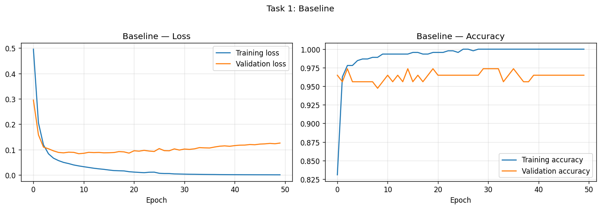
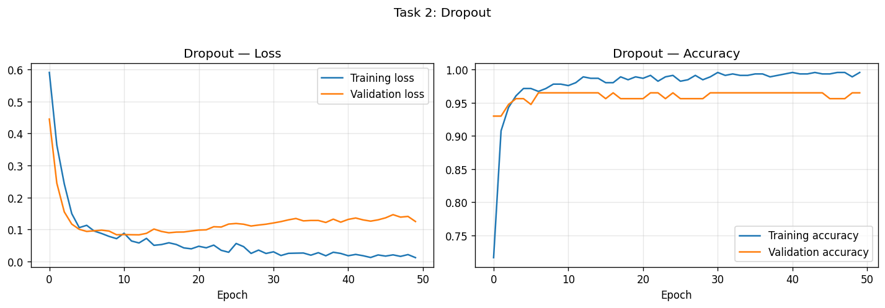
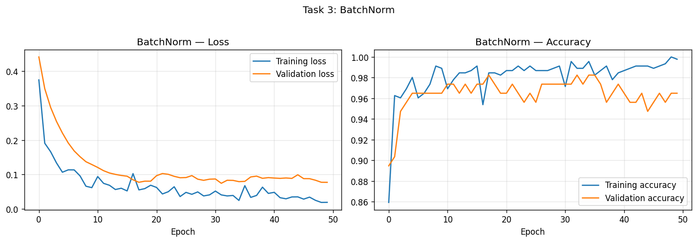
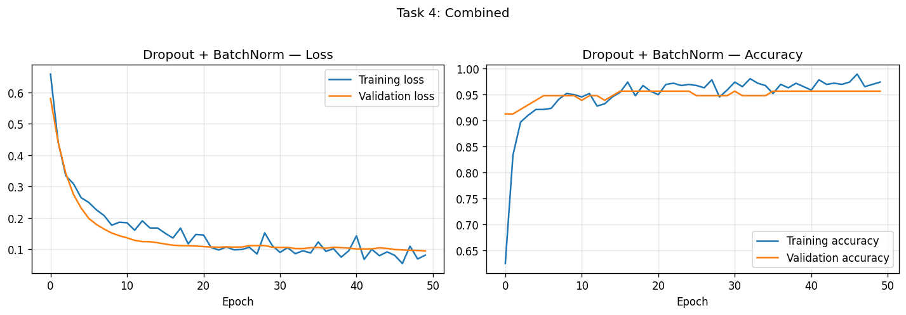
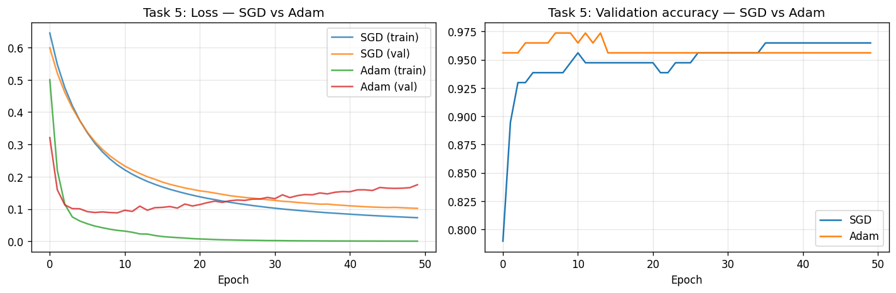
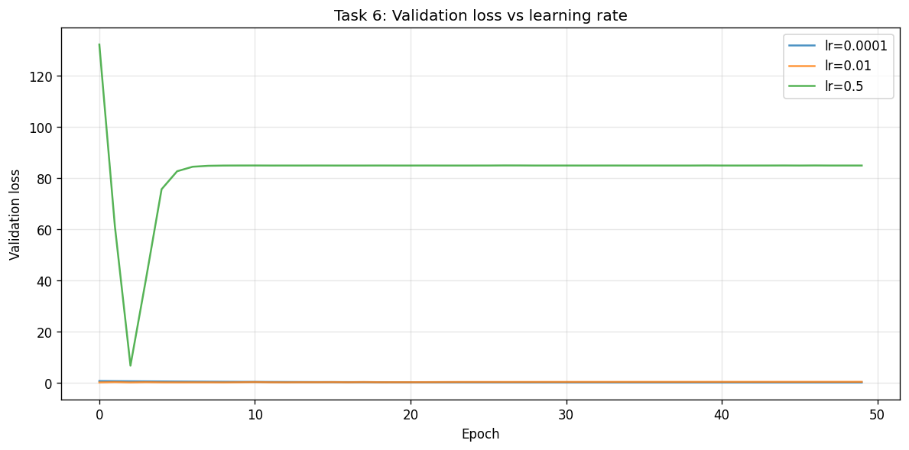

Academic integrity: I declare that this report is my own work. I have not copied from other students or submitted another person's report. As per course policy, plagiarism or copy-pasting leads to zero marks for everyone involved.
This laboratory focuses on improving the training and generalization of deep multilayer perceptrons (MLPs) using TensorFlow. We use the Breast Cancer classification dataset and implement Dropout (regularization), Batch Normalization (training stability), and a comparison of optimizers (SGD vs Adam). We also study the effect of different learning rates on convergence and stability. All experiments are run for 50 epochs; training and validation loss and accuracy are plotted for each configuration.
StandardScaler.Code: lab5_experiments.py. Run from repo root: ./venv/bin/python3 "Lab 5/Zarmeena Jawad's Lab/lab5_experiments.py" or from this folder: ../../venv/bin/python3 lab5_experiments.py
We build a deep network with no Dropout and no BatchNorm, train for 50 epochs, and plot training loss, validation loss, and accuracy.
The baseline is a sequential model with three hidden layers (64, 64, 32 units) and ReLU, then a sigmoid output. The script uses baseline_mlp(input_dim) and run_training().
The baseline often shows a growing gap between training and validation loss (overfitting).
Figure 1.1: Task 1 – Training loss, validation loss, and accuracy.

We add Dropout (rate 0.3) after each hidden layer and compare overfitting behavior and accuracy with the baseline.
Figure 2.1: Task 2 – Dropout.

We add BatchNorm after each Dense layer (before ReLU) and compare convergence speed, stability, and final performance.
Figure 3.1: Task 3 – BatchNorm.

We use both BatchNorm and Dropout in the same model, train, and analyze.
Figure 4.1: Task 4 – Dropout + BatchNorm.

We train the same baseline with SGD (lr=0.01) and Adam (lr=0.001), plot loss curves on the same graph, and compare speed, smoothness, and final performance.
Figure 5.1: Task 5 – Loss curves on same graph (SGD vs Adam).

We train the baseline with Adam using lr = 0.0001, 0.01, and 0.5 and observe stability or divergence.
Figure 6.1: Task 6 – Learning rate sensitivity.

| Model | Val Loss | Val Acc |
|---|---|---|
| Baseline | 0.1260 | 0.9649 |
| Dropout | 0.1247 | 0.9649 |
| BatchNorm | 0.0773 | 0.9649 |
| Dropout+BatchNorm | 0.0951 | 0.9561 |
| SGD (lr=0.01) | 0.1021 | 0.9649 |
| Adam (lr=0.001) | 0.1753 | 0.9561 |
All models trained for 50 epochs.
All plots are embedded above. Reference: task1_baseline.png, task2_dropout.png, task3_batchnorm.png, task4_combined.png, task5_optimizer_comparison.png, task6_learning_rate_sensitivity.png in the plots/ folder.
Overfitting and regularization: The baseline overfits; Dropout reduces the gap by randomly disabling neurons. BatchNorm stabilizes layer inputs and speeds convergence; combining both gives stable training and good validation performance.
Optimizers: Adam converges quickly and smoothly; SGD can reach similar accuracy with more epochs and more oscillation.
Learning rate: Too small slows convergence; too large can cause divergence. A moderate value (e.g. 0.001 for Adam) works well.
We implemented and compared Dropout, BatchNorm, and optimizers on the Breast Cancer dataset. The baseline overfit; Dropout improved generalization; BatchNorm improved convergence and stability; the combined model gave a good balance. Adam converged faster and more smoothly than SGD. Learning rate experiments showed that an appropriate value is essential for stable training.